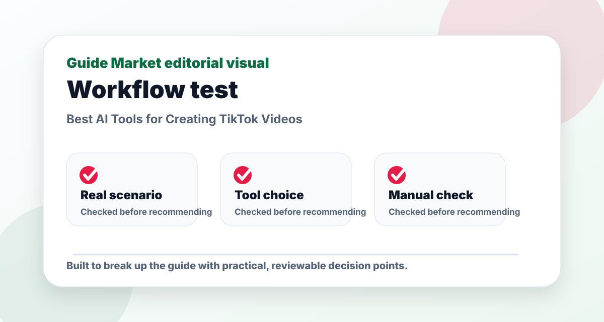
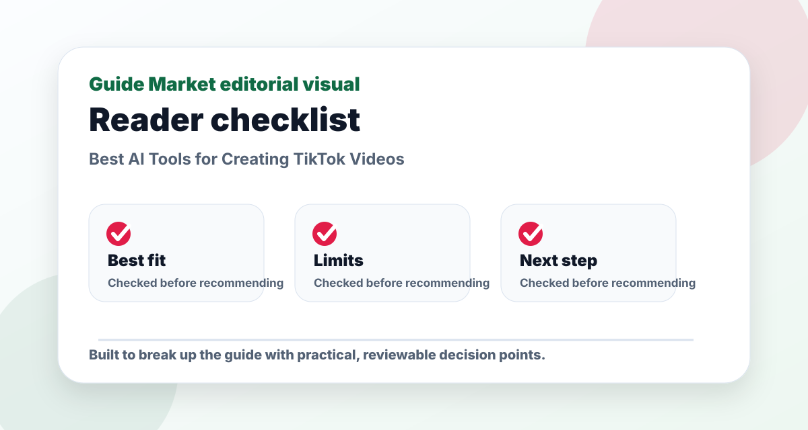
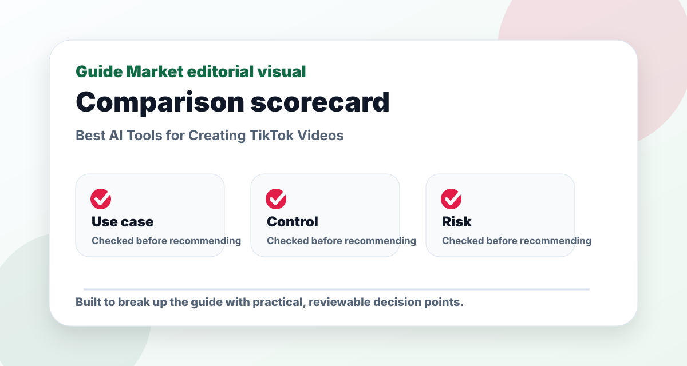

Best AI Tools for Creating TikTok Videos
Published May 12, 2026. Last updated May 24, 2026. Estimated reading time: 9 minutes.
TikTok tools should be judged by speed and retention. If an app helps you create a better hook, cleaner captions, faster cuts, and more variations, it is useful. If it only adds flashy AI effects, it may not improve performance.



The real problem this guide solves
This guide is not meant to be a quick list of names. The real problem is choosing creating tiktok videos tools that solve a real task instead of adding another unused subscription. That requires context: what the reader is trying to do, what can go wrong, and which option is useful after the first impressive demo.
I evaluate CapCut, Canva, Runway, Pika through a practical lens: how easy they are to start, how much control they give you, what must be verified manually, and whether they still make sense after the novelty fades. A recommendation only matters if it survives a realistic task.
Practical comparison criteria
| Criterion | What it reveals | How to test it |
|---|---|---|
| Use-case fit | Whether the option solves the actual job, not a generic version of it. | Test it with this scenario: a reader using creating tiktok videos tools on one realistic project and comparing the output side by side. |
| Control | Whether you can edit, verify, export, or adapt the result. | Try to change the output without starting from zero. |
| Reliability | Whether the recommendation remains useful when facts, prices, or constraints change. | Check the official source and compare with at least one alternative. |
| Long-term value | Whether the workflow will be used repeatedly. | Ask if it saves time next week, not only today. |
Pros and cons
Pros
- Gives a clearer starting point for a messy decision.
- Helps compare options using the same real-world scenario.
- Creates a repeatable workflow instead of a one-off answer.
Cons
- Still requires manual verification and judgment.
- Free plans or public information may be limited or outdated.
- Choosing too many options can create more work, not less.
Editorial verdict
My pick: CapCut for editing, Canva for simple branded templates, Runway for advanced AI video work, and Pika for experimental clips. For most creators, CapCut plus Canva is enough.
Quick picks
- Best free-ish editor: CapCut
- Best branded templates: Canva
- Best advanced AI video: Runway
- Best experimental generation: Pika
Price and feature snapshot
| Tool | Price snapshot | Pros | Cons |
|---|---|---|---|
| CapCut Official site | Free editor with Pro features depending on region/platform | Captions, templates, quick mobile editing | Some effects/templates move behind paid plans |
| Canva Official site | Free plan; paid Pro pricing on official page | Social templates, brand kits, simple video layouts | Less precise than a dedicated video editor |
| Runway Official site | Free/paid creative AI plans listed on official pricing page | AI video generation, background tools, creative edits | Credits can disappear quickly on experiments |
| Pika Official site | Free and paid plan details on official site | Text-to-video and stylized short clips | Less predictable for exact product shots |
A practical TikTok stack
Write ten hooks first. Record one simple talking-head or product clip. Use CapCut for captions and pacing. Use Canva only when you need a branded cover, carousel, or simple ad layout. Bring in Runway or Pika when the video concept needs generative visuals, not for every post.
What beginners get wrong
Beginners spend too much time on effects and not enough time on the first three seconds. AI can generate variations of hooks, but you still need to test which promise, question, or visual pattern keeps people watching.
Editorial recommendation
CapCut is the tool I would choose first because it is closest to the actual TikTok editing workflow. Runway is powerful, but it is overkill if you only need captions, cuts, and a clean hook.
Best use cases
- UGC ad with captions and three hook variants
- Faceless explainer with stock clips and AI voice
- Product demo cut into five short posts
- Creator batch workflow for a week of posts
My 10-minute TikTok test
The fastest way to judge AI video tools is not to ask for a random viral idea. I would run a small production test: choose one product or topic, write ten hooks, record three rough clips on a phone, then use the tools to create three finished versions. Version one should be caption-heavy and fast. Version two should use a stronger visual opening. Version three should test a different promise in the first line. This test tells you more than a feature list because TikTok rewards retention, not software complexity.
CapCut is the tool I would open first for that test. Its automatic captions, timeline controls, templates, beat cuts, and mobile workflow are built for the way short-form creators actually publish. Canva is better when the video is part of a brand system and you need thumbnails, covers, carousel graphics, or reusable ad layouts. Runway and Pika are more experimental: useful for generating scenes, transitions, or stylized clips, but not always necessary for everyday TikTok production.
The important metric is not whether the AI output looks impressive. The important metric is whether viewers understand the promise in the first two seconds. A clean AI-generated background will not save a boring hook. A simple face-to-camera video with sharp captions and a specific problem often beats a polished abstract clip.
What I would actually use
For a creator posting three to five times per week, I would use CapCut as the main editor, Canva for supporting brand assets, and ChatGPT or another writing assistant only for scripting variations. I would not start with Runway or Pika unless the account needs unusual visuals, product mockups, cinematic transitions, or ad concepts that are difficult to film. Generative video is powerful, but it can slow down a simple content workflow if every post becomes a mini production.
A practical workflow looks like this: write ten hooks around one pain point, select the three clearest, record each in one take, cut dead air, add captions, add a pattern interrupt around second three, export, and publish. After publishing, compare retention, saves, comments, and profile clicks. Then duplicate the format that held attention best. AI helps with speed, but the winning format comes from testing.
| Tool | Best for | Avoid if | Real workflow | Learning curve |
|---|---|---|---|---|
| CapCut | Fast TikTok editing, captions, templates | You need complex cinematic compositing | Record on phone, auto-caption, tighten cuts, export vertical | Easy |
| Canva | Branded social assets and simple video posts | You need frame-level timeline control | Create cover, resize assets, build reusable post templates | Easy |
| Runway | Generative scenes and advanced creative experiments | You only need daily talking-head videos | Create B-roll, visual transitions, surreal ad concepts | Medium |
| Pika | Quick AI video experiments | You need predictable brand-safe output every time | Generate short visual clips to support a hook | Medium |
Hook and retention checklist
A TikTok workflow should start with the first line. Use hooks that name a person, problem, or outcome. Examples: “I tried planning a week of meals with AI,” “This is why your first resume draft gets ignored,” or “Three AI tools I would not pay for as a beginner.” These are stronger than “Best AI tools in 2026” because they imply a situation and a judgment.
After the hook, remove warm-up sentences. TikTok viewers do not owe you patience. Add captions that are readable on a phone, keep lines short, and avoid covering the face or product. If you use AI voiceover, make it sound natural and keep pacing brisk. If you use B-roll, it should clarify the point, not decorate it. A checklist before posting: clear hook, visible subject, captions, one core idea, no long pause before the value, and a call to action that matches the content.
For UGC ads, create variations around objections. One video can start with price, another with time saved, another with a before-and-after problem. AI is useful here because it can rewrite a script in different emotional angles: skeptical, practical, urgent, beginner-friendly, or comparison-based. The final recording should still sound human.
Mistakes I noticed in AI video workflows
The biggest mistake is using AI to add complexity before the core idea is clear. Creators generate avatars, transitions, animations, and voiceovers while the video still lacks a reason to watch. The second mistake is copying viral formats without adapting them to a specific audience. A hook that works for fitness may not work for software, education, or finance.
The third mistake is publishing single videos and judging tools from one result. Short-form content needs batches. Create five versions around one idea and track which opening line works. The fourth mistake is overusing templates until every post looks like stock content. Templates help speed, but your examples, opinions, face, product, or data make the post feel original.
My recommendation is simple: use CapCut for execution, Canva for brand support, and generative video only when the concept genuinely needs a visual you cannot film. The best AI TikTok stack is the one that helps you publish more specific tests, not the one with the flashiest demo.
Prompt examples for TikTok scripts
A useful TikTok prompt does not ask for “viral content.” It asks for controlled variations. Example: “Write ten hooks for a 25-second TikTok about AI meal planning for busy students. Make three hooks curiosity-based, three pain-based, two contrarian, and two beginner-friendly. Keep each under twelve words.” Then ask: “Turn the three strongest hooks into scripts with a visual action every four seconds.” This creates a production plan, not just words.
For UGC ads, try: “Write five versions of this script: one skeptical, one budget-focused, one time-saving, one before-and-after, and one direct comparison. Keep the first line different in each version.” This matters because paid and organic short-form content usually improve through iteration. AI is most valuable when it produces testable variations fast.
For editing, create a checklist prompt: “Review this transcript for TikTok retention. Mark any sentence that can be cut, suggest where to add a caption emphasis, and identify the first moment where a viewer might scroll.” This turns the tool into an editor, not just a script generator.
Before and after video structure
Weak structure: intro, explanation, tool list, conclusion. Strong structure: hook, proof, example, payoff, next action. A weak opening says, “Today I am going to talk about the best AI tools for TikTok.” A stronger opening says, “I made three TikTok ads from one ugly phone clip.” The second version gives the viewer a concrete reason to stay.
In practice, I would record a simple screen or face clip first, then use CapCut to remove pauses and add captions. I would use Canva to make a cover frame and maybe a branded end card. If I needed a visual that I could not film, such as a futuristic product scene or an abstract transition, I would test Runway or Pika. I would not use generative video on every post because it can make the content feel less personal.
Retention review checklist
After editing, watch the video with the sound off. Are the captions enough to understand the point? Then watch with sound on but without looking at the captions. Does the voiceover move quickly? Next, check the first frame. Is there a face, product, result, or visual problem? A blank intro screen usually performs worse than a specific opening.
Track at least four signals: three-second hold, average watch time, rewatches, and profile clicks. Likes are nice, but they do not always prove the video worked. If viewers save or rewatch a practical tutorial, that format may be worth repeating. If people comment with objections, those objections can become the next batch of videos.
Final TikTok recommendation
For most people, CapCut plus Canva is enough. Add Runway or Pika when the concept requires generated footage. The winning habit is not buying every AI video tool. It is testing hooks, cutting faster, reading retention, and turning results into the next script.
Content formats worth testing
For TikTok, I would test five repeatable formats before judging any tool. First, the “I tried it” format, where you show a result from a tool. Second, the “three mistakes” format, which is easy to follow and comment on. Third, the “before and after” format, which works well for editing, resumes, meal planning, design, and productivity. Fourth, the “ranking” format, where you compare options quickly. Fifth, the “one prompt” tutorial, where viewers can copy the exact input and result.
CapCut helps with all five because the editing pattern is simple: hook, fast cuts, captions, visual proof, takeaway. Canva helps when the format needs a consistent cover, carousel, or branded frame. Runway and Pika are better for adding unusual visuals to formats three and five. If a tool does not help you make one of these repeatable formats faster, it may be fun but not necessary.
Mini production calendar
A realistic weekly calendar could look like this: Monday write hooks, Tuesday record five clips, Wednesday edit two, Thursday publish one and review analytics, Friday edit two more, weekend repurpose the strongest idea. AI can help write hooks, create caption variations, and turn comments into new ideas. The creator still needs taste: deciding what to cut, what sounds fake, and what the audience actually cares about.
Avoid overproducing when the video is meant to feel personal. Not every clip needs AI B-roll. Sometimes the most credible video is just a person explaining one specific result clearly. The best tool is the one that gets the right version published, not the most elaborate version imagined.
FAQs
What is the best option for beginners?
The best beginner option is usually the one that solves one clear task with the least setup. Start with a free or simple workflow before paying.
Are paid plans worth it?
Only when the paid feature removes a real limit such as exports, collaboration, higher usage, integrations, or better control.
Can these tools replace human review?
No. They can speed up drafting and comparison, but important facts, public content, schoolwork, business decisions, and financial details still need review.
How do I avoid generic results?
Use a specific brief with goal, audience, constraints, examples, and the format you want. Then ask the tool to revise against clear criteria.